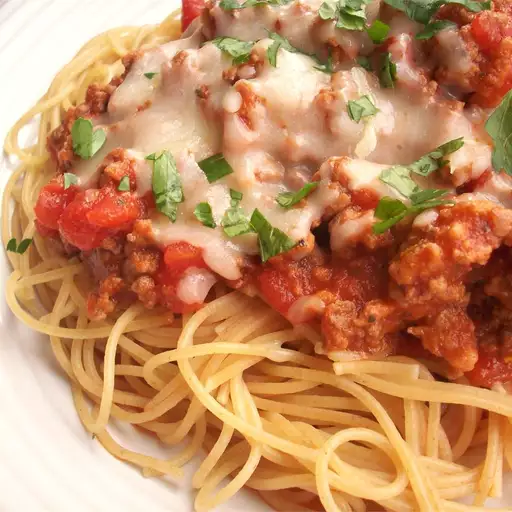

Spaghetti
Spaghetti
Home

Description
I was shown this recipe—Camp David spaghetti with Italian sausage—by a Navy chef who served it to presidents at Camp David, MD. I have served it to my family many times, and it is certainly fit for a president. It is best with a garden salad and crusty garlic bread.
Ingredients
-
2 Italian sausage links, casings removed
-
1 pound lean ground beef
-
1 yellow onion, chopped
- 2 cloves garlic, chopped
-
1 tablespoon olive oil
-
1 (15 ounce) can tomato sauce
-
1 (14.5 ounce) can whole peeled tomatoes
-
1/4 cup chopped fresh oregano
-
1 (16 ounce) package uncooked spaghetti
Steps
-
Slice sausages lengthwise, leaving them attached along one side; lay flat in a large skillet. Cook over medium heat until browned and cooked through, 5 minutes, turning once. Remove from skillet; set aside.
-
Add ground beef, onion, garlic, and olive oil to the same skillet over medium heat; cook and stir until onion is translucent and beef is browned and crumbly, about 10 minutes. Drain all but 2 tablespoons fat from skillet. Stir in tomato sauce, tomatoes, oregano, salt, basil, bay leaf, and black pepper; simmer, uncovered, over low heat until flavors have blended, about 1 hour, stirring occasionally. Remove and discard bay leaf.
-
Preheat the oven to 350 degrees F (175 degrees C).
-
Bring a large pot of lightly salted water to a boil. Cook spaghetti in the boiling water, stirring occasionally, until tender yet firm to the bite, 8 to 10 minutes. Drain. Stir spaghetti into sauce.
-
Divide spaghetti and sauce among oven-safe plates; top each with a cooked, opened sausage and sprinkle with Parmesan cheese. Place plates in the preheated oven until cheese melted and begins to brown, 5 to 10 minutes.